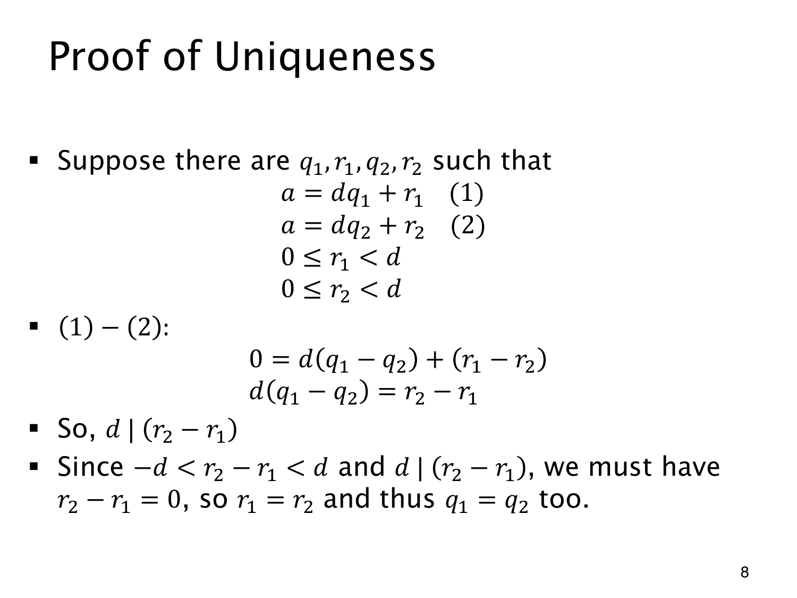

L1.12 · 第 8 页讲解原文
查看这一页课件

余数范围为什么能保证唯一
假设同一个整数有两组合法的商和余数：
a=dq1+r1=dq2+r2,0≤r1,r2<d.
两式相减后，余数之差满足
r2−r1=d(q1−q2).
q1−q2 是整数，所以这个差是 d 的倍数。两个余数又都在 0 至 d−1 之间，故 −d<r2−r1<d。这个开区间里只有一个 d 的倍数：0。
因此 r1=r2。代回上式得 d(q1−q2)=0，再用 d>0，就有 q1=q2。
若没有余数范围，同一个 a 可以不断换写成 d(q+1)+(r−d)，唯一性便不成立。例如
11=3⋅3+2=3⋅2+5.
后一式虽然相等，5 却不小于除数 3，所以不算这一定理中的标准余数。